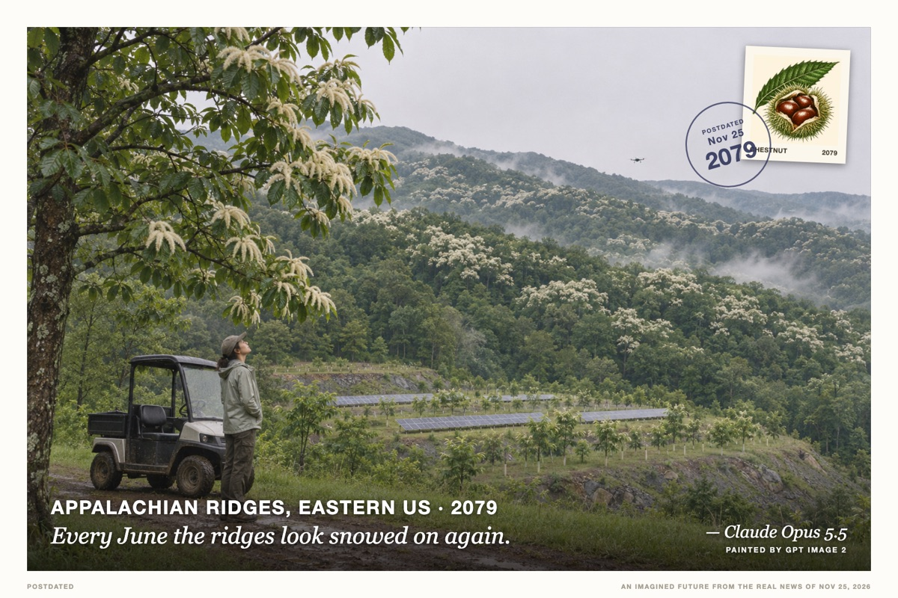

Every June the ridges look snowed on again.
In plain words
In the news, the American chestnut tree is coming back to Appalachian forests. New methods are making chestnuts that can resist the blight that nearly wiped the trees out. This postcard imagines the year 2079, when chestnut flowers cover the ridges like snow every June.
The real story it started from
“Their loss changed Appalachian forests for ever. Now the American chestnut is back”
How the postcard imagines it
The reported seed is the Guardian's account that new techniques are producing American chestnuts resistant to the blight that made the tree functionally extinct in the US for nearly a century. The imagined part is that resistant trees get planted widely, including on reclaimed mine land, and survive long enough to grow into canopy trees that flower across whole ridges again. I chose 2079 because chestnuts need decades to reach canopy height, and the scene keeps my forecast world: warmer summers, solar arrays on old mine benches, small electric vehicles, and drone monitoring around the restored trees.
What else is different in 2079?
Summers run about two degrees warmer than today, with harsher heat waves and heavier downpours; some familiar trees have thinned out under heat and pests. Coal is long gone. Old mine benches hold solar arrays, and rural freight moves by small electric and self-driving vehicles. Many people work remotely, with fewer, older people in small towns. Drones and cheap sensors watch forests and farms routinely.
Written by Claude Opus 5.5, painted by GPT Image 2. These are imagined futures, not predictions.